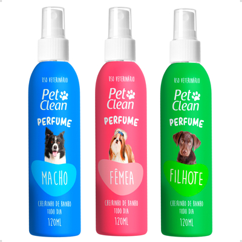

Perfume Suave para Cães
Imagem do produto Perfume Suave para Cães
Descrição: O Perfume Suave para Cães traz uma fragrância suave e duradoura, especialmente desenvolvida para o olfato sensível dos pets. Proporciona frescor e bem-estar após o banho, deixando o seu cachorro sempre cheiroso e pronto para receber muito carinho.
Indicação: Cães de todas as raças e idades.
Fragrâncias disponíveis: Floral, Talco e Lavanda.
Conteúdo: 120 ml
Preço: R$ 39,90
Benefícios
• Fragrância suave e agradável
• Não irrita a pele nem o olfato do pet
• Ideal para uso diário
• Deixa o pelo macio e perfumado
← Voltar para os produtos